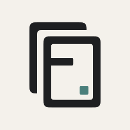

状态徽标
新增元组件
Native Kit v0.3 候选
同一套状态词，不按页面重新发明
已同步
未开始
需确认
完成
只表达状态，不承载解释；解释放在所在行或面板正文里。
这版用于快速筛选可沉淀进 Native Kit 的模式。它模拟 Obsidian 主题变量，FRIDAY 只出现在身份、空状态、助手和少量入口里。
这些不是某一个页面独有的组件，而是按钮、状态、文件、浮层和运行态的通用语法，后续 Kit 都应该优先复用。
这些组件只用于 FRIDAY 身份出现的地方：页头、空状态、助手身份、插件入口。普通设置行和工具按钮仍然走 Obsidian 原生样式。
适合 Native Kit 目录、onboarding、发布说明；不放进每个普通面板标题。

这个资产适合外部入口，不建议直接放进日常设置项或工具栏。
先放入 Native Kit 的核心层，设置页、配置面板、普通控件都从这里开始。
风险说明使用行内提醒，不把每个错误都做成单独大卡片。
空状态、局部告警、前置条件，适合做得有一点 FRIDAY 感，但不脱离 Obsidian。
先选择一个文件夹，FRIDAY 会把相关笔记和上下文放在同一个项目里。
设置 API Key 后，当前会话会自动恢复。这个提示作为设置组内的一行出现。
审批、危险操作、diff 预览，优先标准化，因为这些组件直接影响用户信任。
Daily Board、项目页、工具页都需要一致的顶部栏、项目选择和紧凑工具按钮。
工具开关、Skill 分组、审阅说明和权限策略是 FRIDAY 的能力面板，不应混成普通设置行。
助手身份可以有 FRIDAY 记忆点，但消息、徽标、输入框仍然保持 Obsidian 的密度。
先做一个初版，我来挑。
可以，先按这版推进。
我已按 Native Kit 的结果态规则整理了消息结构，并把产物按文件类型归入同一组展示。
friday-ui-ux-gap.md
native-kit-map.canvas
项目状态、同步冲突、忽略规则更像 Obsidian 管理面板，不应该做成营销卡片。